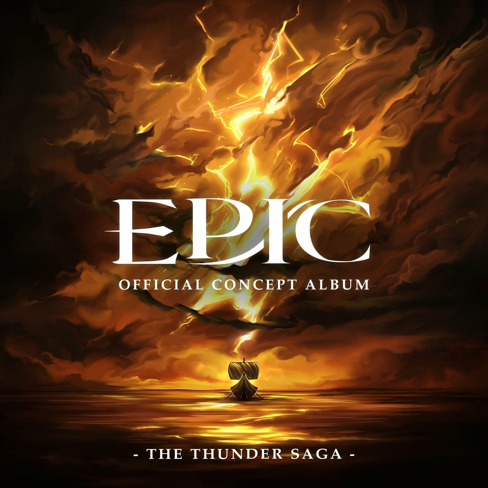

| Meuterei | |
|---|---|
|  | |
| Song Information | |
| Song Nr. | 24 |
| Akt (Saga) | Akt 2 (Donner Saga) |
| Gesungen von: | Michael Hinterlechner |
| Epic: German Ensemble | |
| Charaktere | Odysseus |
| Eurylochus | |
| Perimedes | |
| Griechische Soldaten | |
| Übersetzt von | |
| Chronologie | |
| Vorheriger | Skylla (Song) |
| Nächster: | Donner Bringer |
Meuterei
Meuterei ist der vierte Song der Donner Saga. In diesem Song entscheiden sich Eurylochos und der Rest der Crew, welche verleitet worden waren sechs ihrer Crewkameraden zu opfern, gegen Odysseus zurückzukämpfen.
Songtext
| Original Text | Deutscher Text |
|---|---|
|
[EURYLOCHUS] Tell me you did not know that would happen Say you didn't know how that would end Look me in the eyes and tell me, Captain That you did not just sacrifice six men Use your wits to try and say I'm crazy and mad That this is all some trick the gods have sent Tell me you did not miss home so painfully bad That you gave up the lives of six of our friends When we fought the cyclops, you were quick to hatch a plan And when we fought with Circe, it was you who left behind no man But when we fought this monster, we didn't take a stand We just ran Say something!! [ODYSSEUS, gesprochen] I can't!! [EURYLOCHUS, gesprochen] Then you have forced my hand... [SOLDATEN] Eurylochus [ODYSSEUS] Lower your weapon [EURYLOCHUS] No can do You miss your wife so bad you trade the lives of your own crew [ODYSSEUS] Don't make me fight you, brother, you know you'd have done the same [EURYLOCHUS] If you want all the power, you must carry all the blame [SOLDATEN] Eurylochus, Eurylochus, Eurylochus Odysseus, Odysseus, Odysseus There is no price he won't pay [ODYSSEUS] I am not letting you get in my way My brothers, why? [PERIMEDES & SOLDATEN] How are we supposed to trust you now? Now your time has come, your luck's run out Now, the time has come to shut you down You relied on wit and then we died on it Woah-oh-oh [ODYSSEUS, gesprochen] Agh, my head... Where are we? [EURYLOCHUS] Some island, the first one we found It's bursting with cows just roaming around Begging us to eat, so much meat And hunger is so heavy This statue The God of the Sun Don't know where it's from But here's where we found all these cows to hunt Right in front And hunger is so heavy [SOLDATEN] Hunger is so heavy [ODYSSEUS] Please don't tell me you're about to do what I think you'll do [EURYLOCHUS] Ody, we're never gonna get to make it home You know it's true [ODYSSEUS] You don't know that's true This is the home of the Sun God [EURYLOCHUS] I'm starving my friend [ODYSSEUS] But if you kill his cattle, who knows what he'll send? This is the home of the Sun God [EURYLOCHUS] I'm tired, my friend [ODYSSEUS] But we're so close to home, this can't be where it ends [EURYLOCHUS, ODYSSEUS] How much longer must I suffer now? Please don't do this How much longer must I push through doubt? I need to get home How much longer must we go about Eurylochus My life like this when people die like this? Woah [EURYLOCHUS & SOLDATEN, ODYSSEUS] How much longer must we suffer now? Reconsider How much longer must we push through doubt? We can get home How much longer must we go about Eurylochus Our lives like this when people die like this? Woah [EURYLOCHUS] I'm just a man! [ODYSSEUS, gesprochen] Eurylochus, NO!!! You've doomed us... YOU'VE DOOMED US ALL, EURYLOCHUS!!! [EURYLOCHUS, gesprochen] Captain? [ODYSSEUS] We need to get away from this island now! Grab an oar with all the strength your arms allow! These cows were immortal! They were the Sun God's friends! And now that we've pissed them off, WHO DO YOU THINK HE'LL SEND?! [SOLDATEN] Full speed ahead Full speed ahead [ODYSSEUS] Faster! [SOLDATEN] Full speed ahead [ODYSSEUS] Faster! [SOLDATEN] Full speed ahead [ODYSSEUS, gesprochen] ...We're too late. |
Trivia
- Dieser Song wurde in D moll und im 4/4 Takt geschrieben.
- Der Anfang des Songs hat die selbe Melodie wie das Ende von Mein Lebwohl.
-
Dieser Song hat Referenzen an Glück geht aus,
Das Pferd und der Säugling,
Nur ein Mann und Volle Kraft vorraus.
-
Der zweite Teil vom Song hat die selbe melodische Struktur wie Zeus's Zeilen in
Das Pferd und der Säugling.
- Dies könnte eine direkte Überleitung zum nächsten Song sein, Donner Bringer.
-
Der zweite Teil vom Song hat die selbe melodische Struktur wie Zeus's Zeilen in
Das Pferd und der Säugling.
-
Das "Gefahr ist in der Nähe" Motif ist in 3 wichtigen Teilen des Songs zu hören.
- Als Eurylochus seinen Verrat erzählt.
- Als Eurylochus eine von Helios' Kühen tötet.
- Während die Crew eilig von Thriankia wegrudert.
- Eurylochus nennt Odysseus bei seinem Spitznamen 'Ody'.
-
Das Ende vom Song spiegelt die Einführung von Poseidon in
Halt dir Freunde nah wieder.
- Aber nicht wie Poseidon, muss Zeus nichts sagen. Sein Donner ist genug um Odysseus wissen zu lassen, wen Helios ihnen augehetzt hat.